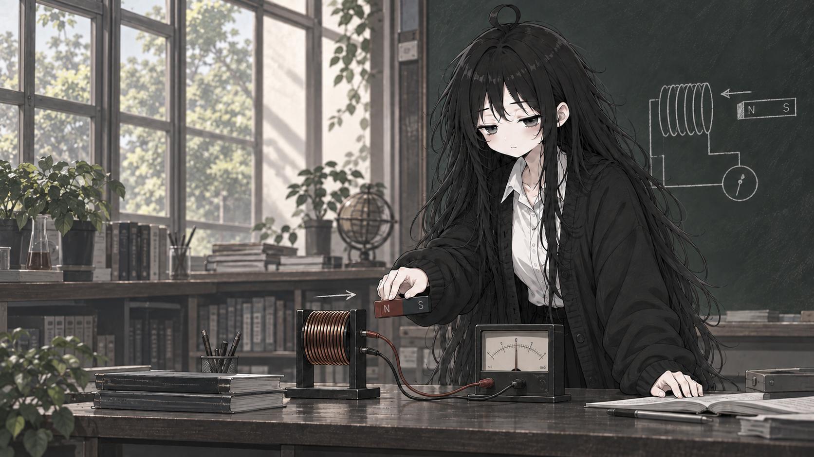
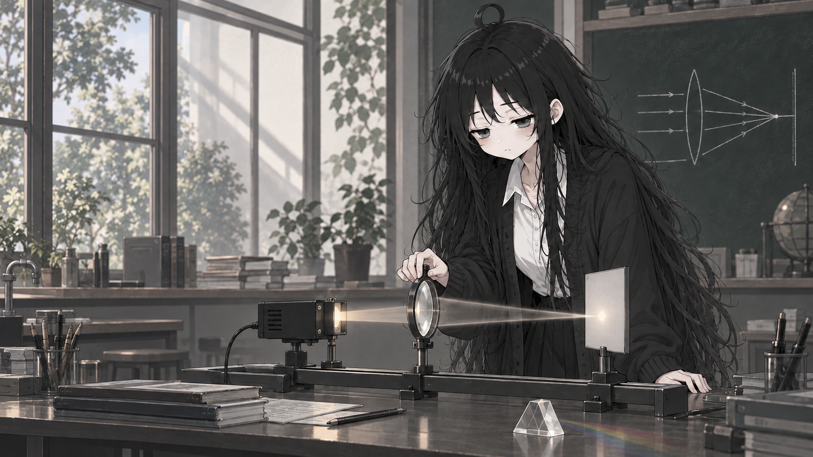
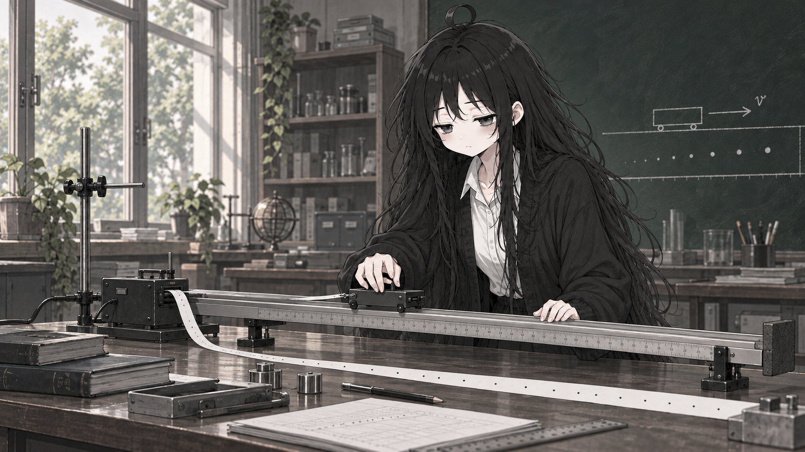
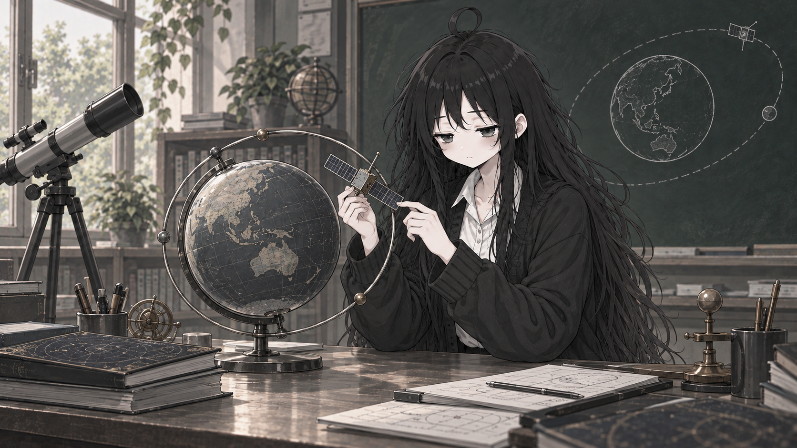
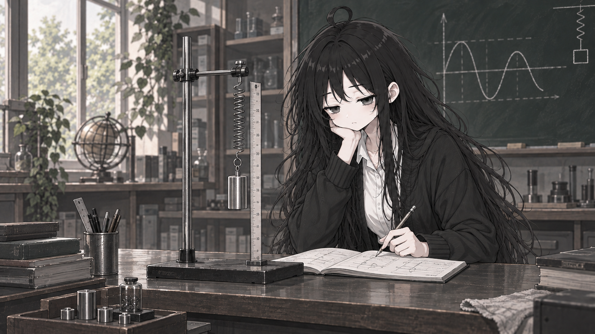
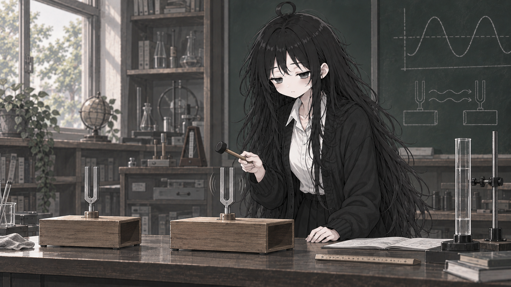
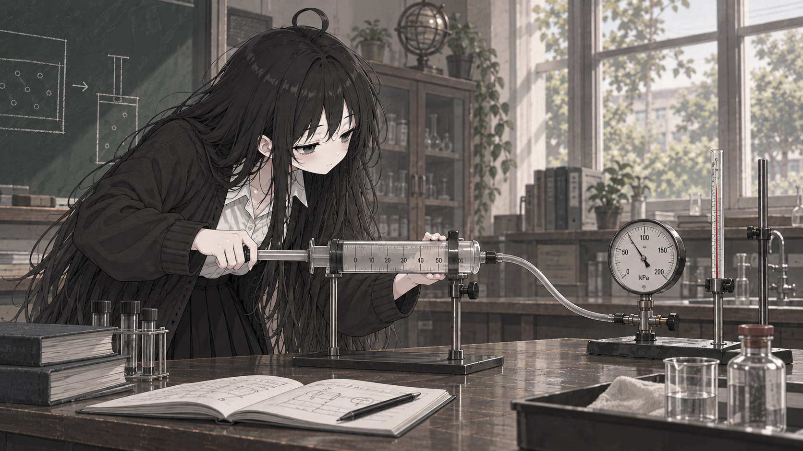
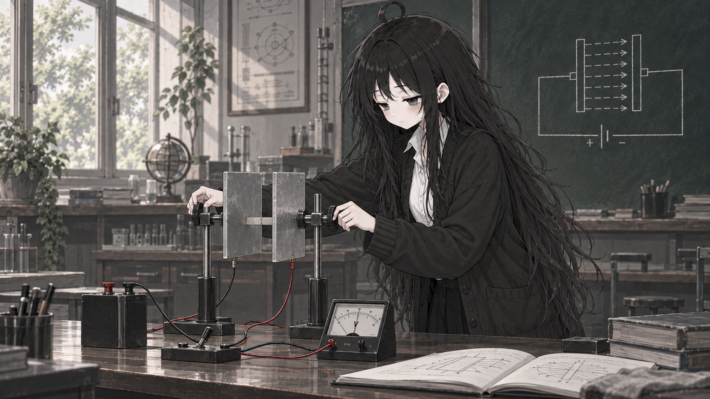
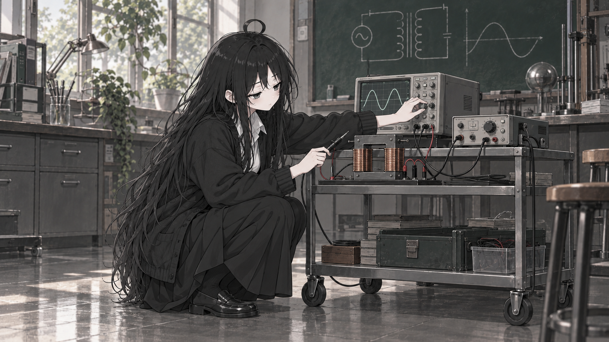
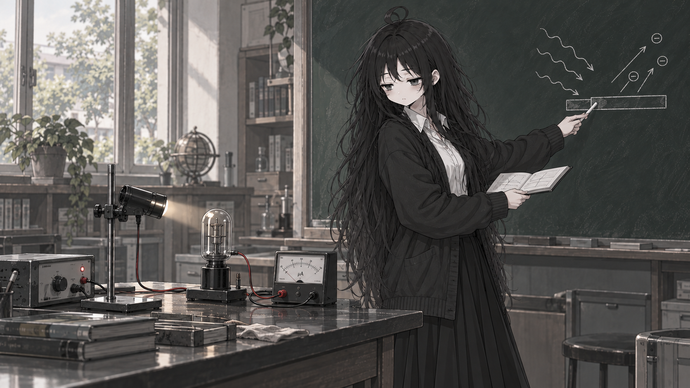

01 · 受力分析1672 × 941
01 · 受力分析1672 × 941
02 · 平抛运动1672 × 941
03 · 圆周运动1672 × 941
04 · 机械能1672 × 941
05 · 电场1672 × 941
06 · 电路实验1672 × 941
07 · 磁场1672 × 941

08 · 电磁感应1672 × 941
09 · 机械波1672 × 941

10 · 光学1672 × 941

11 · 匀变速直线运动1672 × 941
12 · 动量与碰撞1672 × 941

13 · 万有引力1672 × 941

14 · 简谐运动1672 × 941

15 · 共振1672 × 941

16 · 气体与压强1672 × 941
17 · 热传递1672 × 941

18 · 电容器1672 × 941

19 · 交流电与变压器1672 × 941

20 · 光电效应1672 × 941